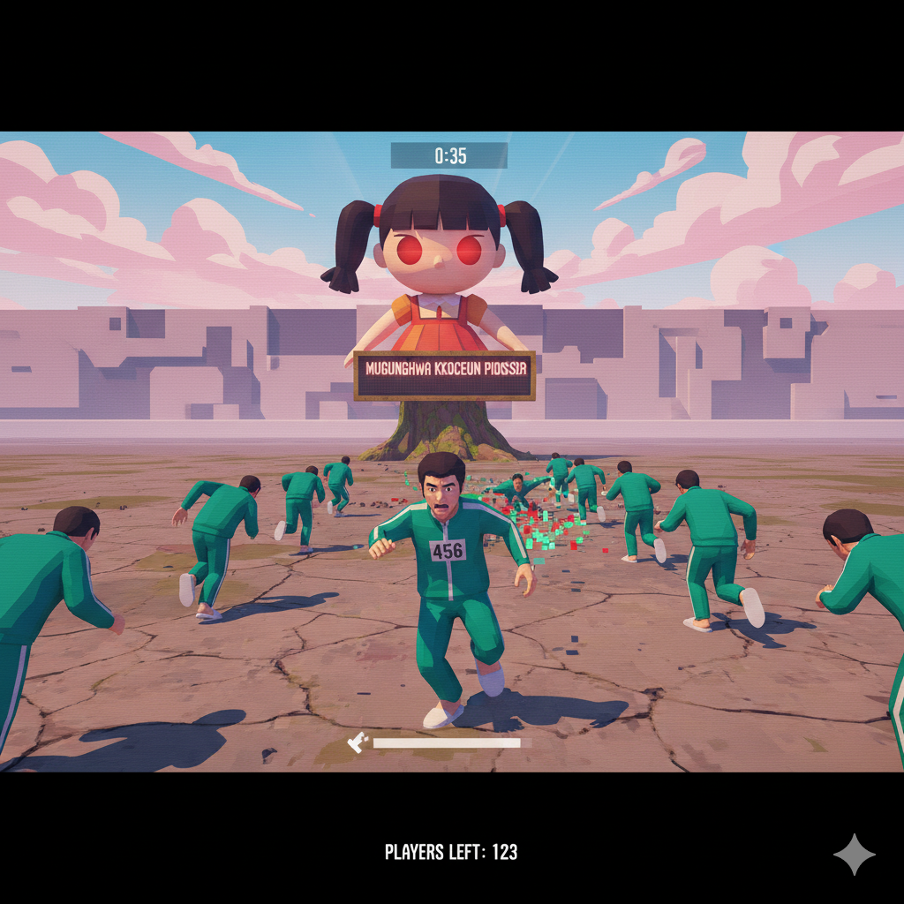

<!DOCTYPE html>
<html lang="th">
<head>
<meta charset="UTF-8">
<title>Squid Game - for blind</title>
<style>
body{font-family:sans-serif;text-align:center;background-color:#000;color:#fff;margin:0;padding:0}
img{max-width:300px;display:block;margin:0 auto}
button{font-size:1.5em;padding:10px 20px;margin-top:20px;border-radius:12px;border:none;background-color:#e50914;color:#fff;cursor:pointer}
#gameContainer{margin-top:50px}
</style>
</head>
<body>
<div id="gameContainer" role="main" aria-live="assertive"></div>
<script>
const audioFiles=['start.mp3','go1.mp3','go2.mp3','go3.mp3','go4.mp3','pass.mp3','pass-die1.mp3','pass-die2.mp3','over.mp3','end.mp3','pic.png'];
let audios={},deaths=0,distance=0,startTime=0,isGoing=false,inGoRound=false,playerStoppedDuringGo=false,lastDieSound='';
let isGameEnded=false,isLocked=false;
const container=document.getElementById('gameContainer');

// --------------------- Focus Mode ---------------------
function activateFocusMode() {
  container.setAttribute('role','application');
  container.setAttribute('tabindex','0');
  try { container.focus(); } catch(e){}
}
function deactivateFocusMode() {
  container.removeAttribute('role');
  container.removeAttribute('tabindex');
}

// --------------------- โหลดไฟล์เสียง ---------------------
function loadAssets(){
 container.textContent='กำลังโหลดไฟล์..กรุณารอสักครู่';
 let loaded=0,total=audioFiles.length;
 audioFiles.forEach(f=>{
  if(f.endsWith('.mp3')){
   const a=new Audio('audio/'+f);
   a.addEventListener('canplaythrough',()=>{loaded++;if(loaded===total)startGameMenu();},{once:true});
   audios[f]=a;
  }else{
   const img=new Image();
   img.src='audio/'+f;
   img.onload=()=>{loaded++;if(loaded===total)startGameMenu();};
  }
 });
}

// --------------------- หยุดเสียงทั้งหมด ---------------------
function stopAllAudio() {
  for (let key in audios) {
    audios[key].pause();
    audios[key].currentTime = 0;
  }
}

// --------------------- หน้าหลัก ---------------------
function startGameMenu(){
 deactivateFocusMode();
 isLocked=false; // ปลดล็อกเมื่อกลับเมนู
 container.innerHTML='<h1 tabindex="0">Squid Game - for blind</h1><p>คุณมี 2 ชีวิต และต้องเดินให้ครบ 20 เมตร!<br>กด "ไป" เพื่อเดิน และ "หยุด" ให้ทันก่อนเสียงโกโกวาจะจบ! หรือใช้แป้นพิมพ์ลัด โดยกดปุ่ม ลูกศรขึ้นค้างไว้เพื่อเดิน กดปล่อยเพื่อหยุด เกมนี้เหมาะกับ NVDA</p><button id="startBtn">เริ่มเกม</button>';
 document.querySelector('h1').focus();
 document.getElementById('startBtn').onclick=()=>{
  showOnlyImage();
  playAudio('start.mp3',()=>{
    startMainGame();
    activateFocusMode();
  });
 };
}

function showOnlyImage(){
 container.innerHTML="";
 container.innerHTML='<p>Squid game : audio only</p>';
 document.querySelector('#gameContainer img').focus();
}

// --------------------- เริ่มเกม ---------------------
function startMainGame(){
 deaths=0;distance=0;
 renderGameScreen();
 setTimeout(playNextRound,500);
}

function renderGameScreen(){
 if(isLocked) return;
 container.innerHTML='<h1 tabindex="0">Squid Game - for blind</h1><p id="status">ระยะทาง: '+distance.toFixed(1)+' เมตร | ชีวิต: '+(2-deaths)+'</p><button id="goBtn" disabled>ไป</button>';
 const goBtn=document.getElementById('goBtn');
 goBtn.focus();
 goBtn.onclick=()=>{
  if(!inGoRound || isLocked)return;
  toggleGoStop(goBtn);
 };
}

// --------------------- ปุ่ม ไป / หยุด ---------------------
function toggleGoStop(goBtn){
  if(isLocked) return;
  isGoing=!isGoing;
  goBtn.textContent=isGoing?'หยุด':'ไป';
  if(isGoing){
   startTime=Date.now();
   playerStoppedDuringGo=false;
  }else{
   if(inGoRound){
    playerStoppedDuringGo=true;
    const elapsed=(Date.now()-startTime)/1000;
    distance+=elapsed;
    if(distance>=20)return gameWin();
   }
  }
  updateStatus();
}

function updateStatus(){
 const st=document.getElementById('status');
 if(st)st.textContent='ระยะทาง: '+distance.toFixed(1)+' เมตร | ชีวิต: '+(2-deaths);
}

// --------------------- เล่นรอบใหม่ ---------------------
function playNextRound(){
 if(deaths>=2)return gameOver();
 if(distance>=20)return gameWin();
 if(isLocked)return;
 renderGameScreen();
 const goFiles=['go1.mp3','go2.mp3','go3.mp3','go4.mp3'];
 const randomFile=goFiles[Math.floor(Math.random()*goFiles.length)];
 const audio=audios[randomFile];
 inGoRound=true;isGoing=false;playerStoppedDuringGo=false;
 const goBtn=document.getElementById('goBtn');
 goBtn.disabled=false;goBtn.textContent='ไป';goBtn.focus();
 audio.currentTime=0;audio.play();
 audio.onended=()=>{
  inGoRound=false;
  goBtn.disabled=true;
  const delay=100;
  setTimeout(()=>{
   if(playerStoppedDuringGo){
    playAudio('pass.mp3',()=>{
     setTimeout(()=>{renderGameScreen();playNextRound();},1000);
    });
   }else{
    deaths++;
    let dieSound=lastDieSound==='pass-die1.mp3'?'pass-die2.mp3':'pass-die1.mp3';
    lastDieSound=dieSound;
    playAudio(dieSound,()=>{
     if(deaths>=2)return gameOver();
     setTimeout(()=>{renderGameScreen();playNextRound();},1000);
    });
   }
   updateStatus();
  },delay);
 };
}

// --------------------- เล่นเสียง ---------------------
function playAudio(name,callback){
 const a=audios[name];
 if(!a)return callback&&callback();
 a.currentTime=0;a.play();
 a.onended=()=>callback&&callback();
}

// --------------------- จบเกม ---------------------
function gameOver(){
  if(isGameEnded)return;
  isGameEnded=true;
  isLocked=true;
  showOnlyImage();
  stopAllAudio(); // หยุดเสียงทั้งหมดก่อน
  setTimeout(()=>{
    playAudio('over.mp3',()=>{
      deactivateFocusMode();
      resetGame();
    });
  },500); // หน่วง 0.5 วินาที
}

function gameWin(){
  if(isGameEnded)return;
  isGameEnded=true;
  isLocked=true;
  showOnlyImage();
  stopAllAudio(); // หยุดเสียงทั้งหมดก่อน
  setTimeout(()=>{
    playAudio('end.mp3',()=>{
      deactivateFocusMode();
      resetGame();
    });
  },500); // หน่วง 0.5 วินาที
}

function resetGame(){
 deaths=0;distance=0;isGameEnded=false;isLocked=false;
 startGameMenu();
}

// --------------------- Shortcut Key: ลูกศรขึ้น ---------------------
document.addEventListener('keydown',e=>{
  if(isLocked)return;
  if(e.key==='ArrowUp'){
    const goBtn=document.getElementById('goBtn');
    if(goBtn && !goBtn.disabled && !isGoing){
      toggleGoStop(goBtn);
    }
  }
});

document.addEventListener('keyup',e=>{
  if(isLocked)return;
  if(e.key==='ArrowUp'){
    const goBtn=document.getElementById('goBtn');
    if(goBtn && !goBtn.disabled && isGoing){
      toggleGoStop(goBtn);
    }
  }
});

loadAssets();
</script>
</body>
</html>
